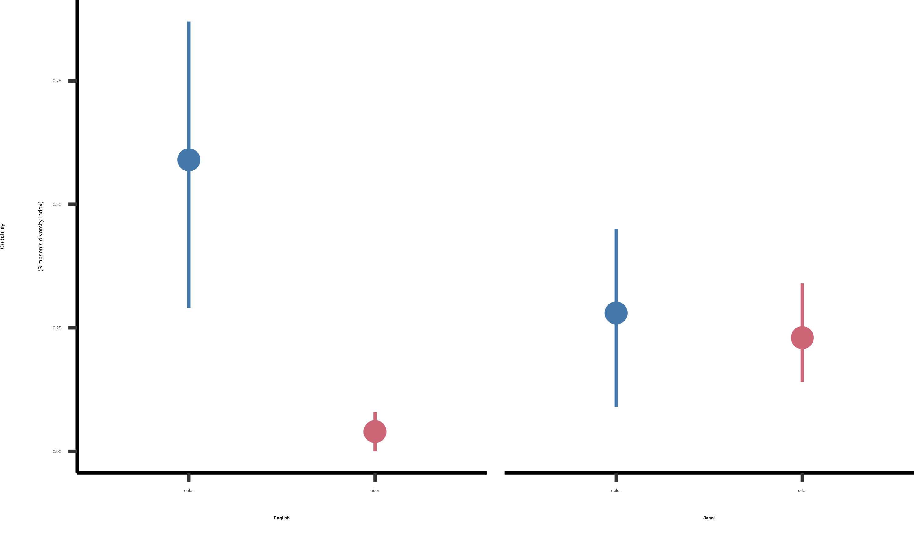
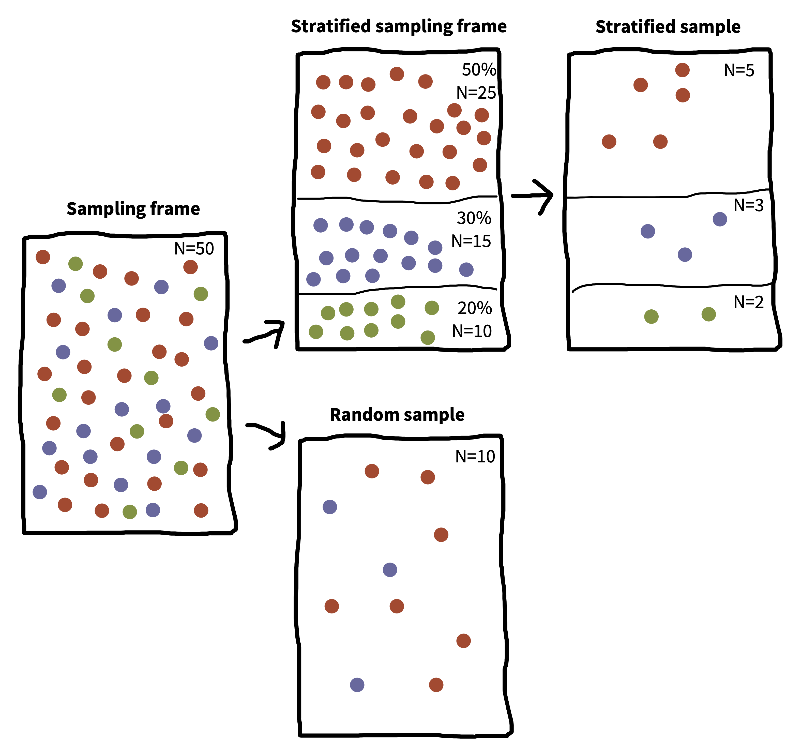
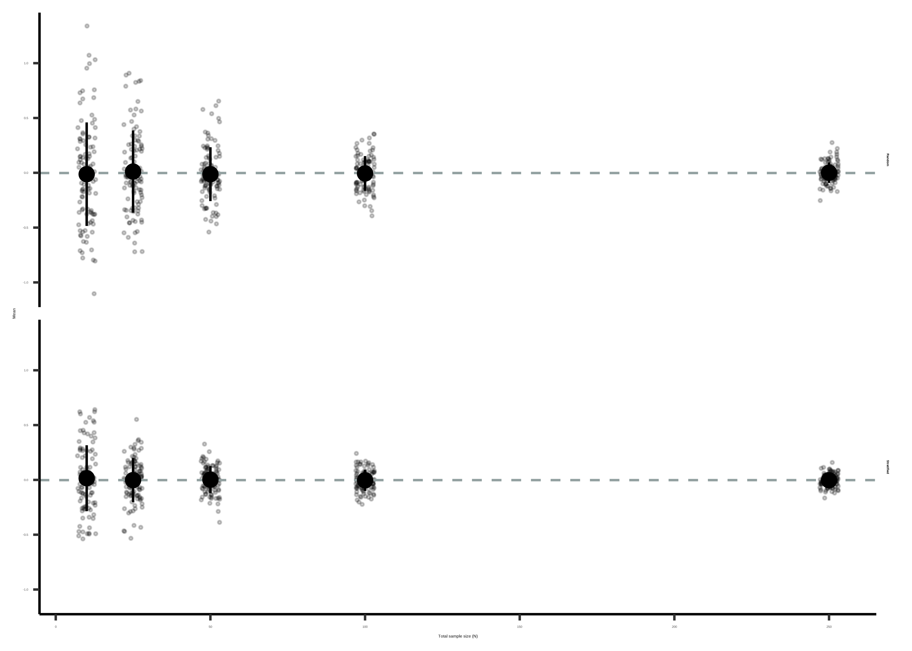
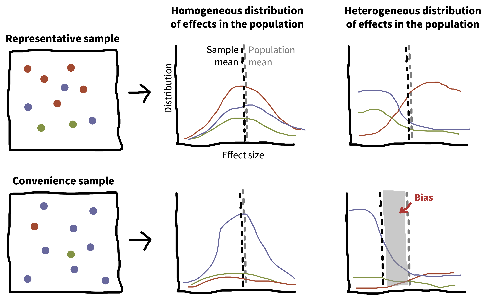
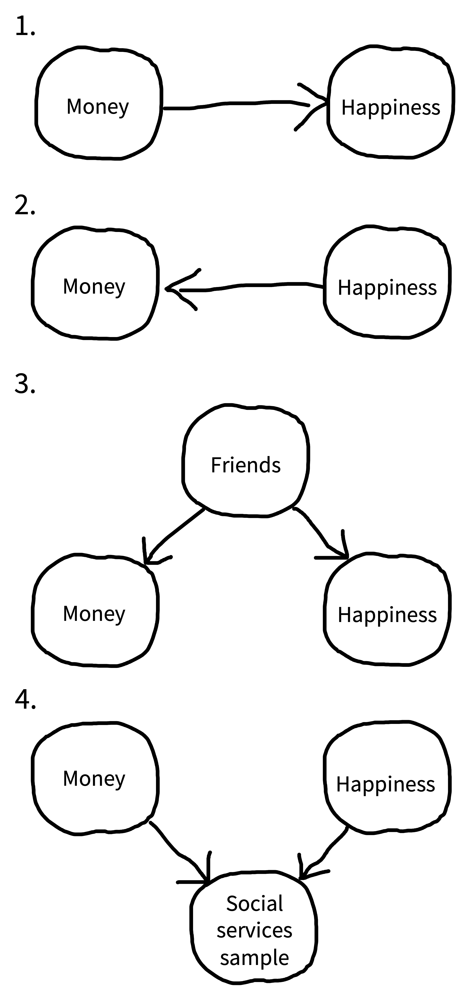
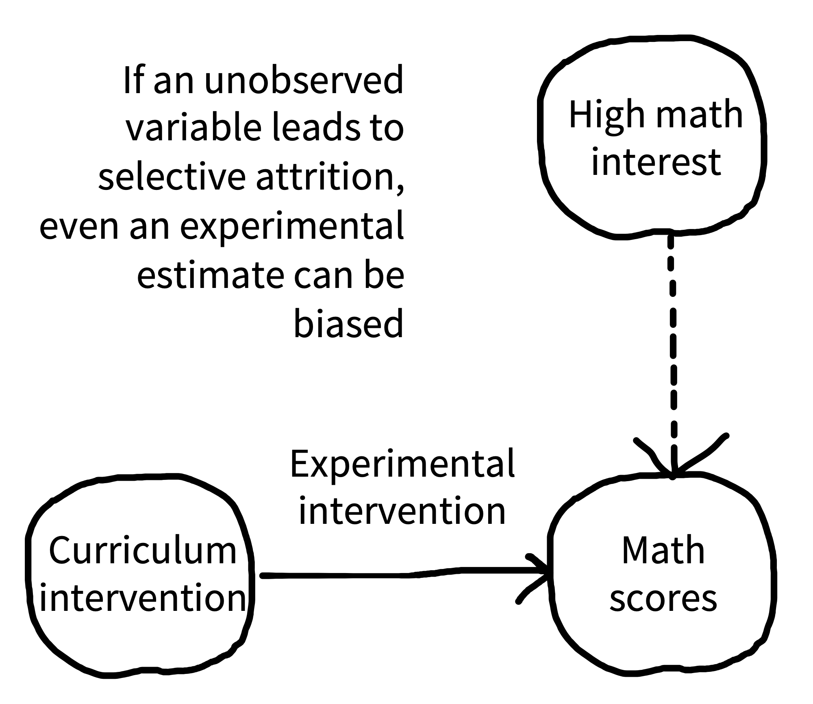
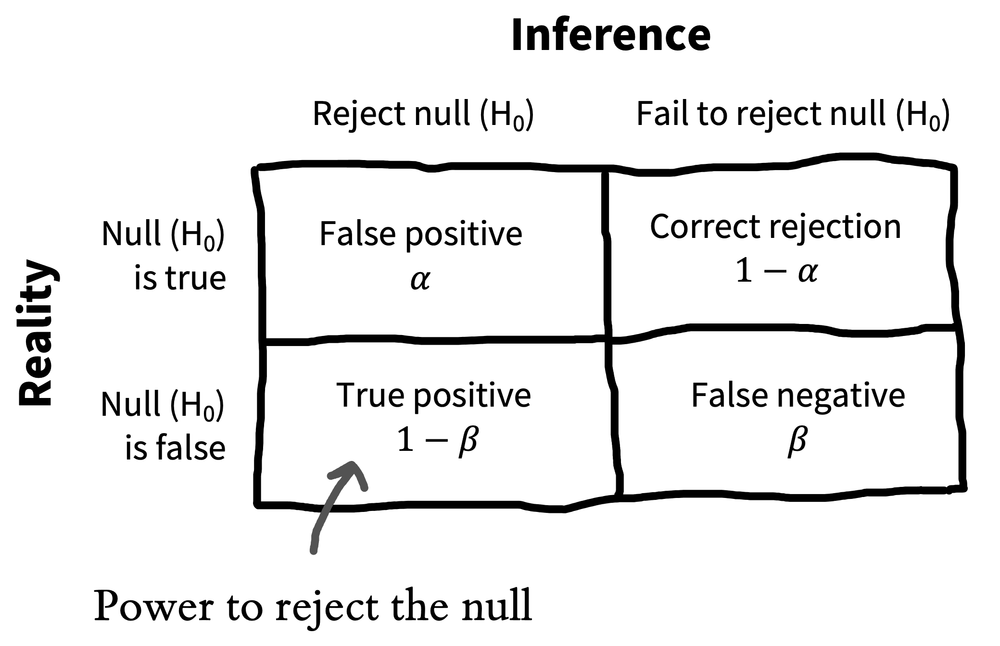
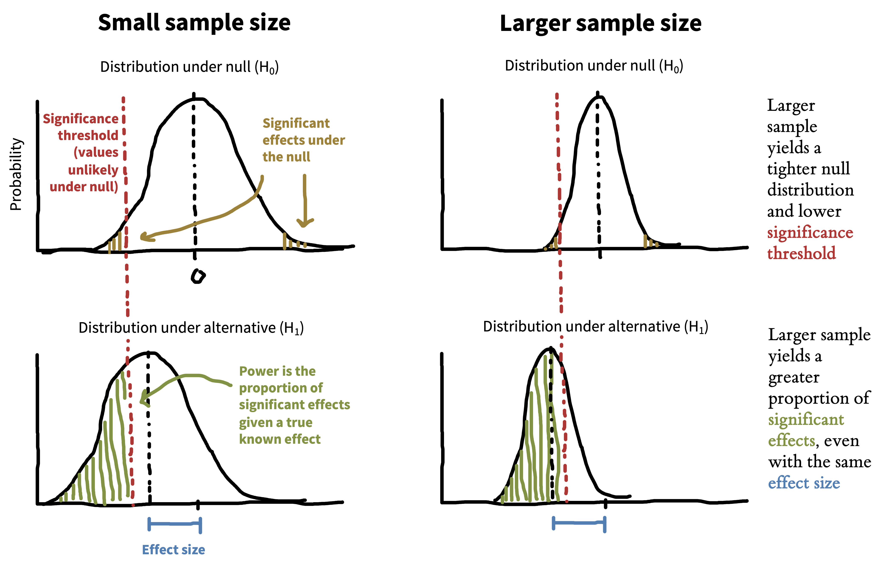

10 抽样
注记learning goals
- 讨论抽样理论和分层抽样
- 推理不同样本的局限，尤其是方便样本的局限
- 考虑抽样偏差以及它们如何影响你的推断
- 学习如何为实验选择并说明合适的样本量
正如我们一直提醒你的，实验被设计出来，是为了产生对某个因果效应的测量。但是什么东西的因果效应？又是对谁而言的因果效应？这些问题在我们的论文中常常获得出人意料地少的讨论空间。顶刊标题读起来像是：“Daxy thinking promotes fribbles”，“Doing fonzy improves smoodling”，或者 “Blicket practice produces more foozles than smonkers”。1 每个标题都用泛称语言提出一个暗示普遍成立的 claim (DeJesus 等 2019)，2 但对每一个 claim，我们都可以合理地问：“对谁而言？”是所有人？还是某一类特定的人？这些问题关乎我们的关键主题：可推广性。
1 标题已修改，以保护原作者。这些研究者很可能在论文正文中说了更具体的话。
2 泛称语言是一种很有意思的语言现象。当我们说“蚊子传播疟疾”这类话时，我们并不是说所有蚊子都会传播疟疾，而大概是说：“相对于其他相关昆虫或其他生物，把蚊子概括为疟疾传播者，是一个有效且有诊断性的概括” (见 Tessler 和 Goodman 2019)。
让我们聚焦于 smoodling。我们不会允许作者提出一个完全普遍版本的 claim：“做[任何] fonzy 都会改善 smoodling [对所有人]。”这个非泛称版本所陈述的概括，远远超出了我们实际拥有的证据。但我们似乎常常可以接受作者（通过泛称语言）暗示他们的发现可以广泛推广。想象一下，这些标题中某一个完全具体的版本可能是什么样：“在实验室阅读一段特定 fonzy 材料 15 分钟，提高了 36 名大学生在一份问卷上的 smoodling 分数。”这篇论文的适用范围听起来就很窄！
在统计估计和推断的讨论中，我们已经遇到过可推广性。当我们估计某个特定量（比如 fonzy 的效应）时，我们是在自己的样本中估计它。但接着，我们使用推断工具推理这个样本中的估计如何关联到整个总体中的参数。我们如何把这些用于推广的统计工具，与我们关于发现可推广性的科学问题连接起来？这就是本章的问题。
实验规划中的一组关键决策，是从什么总体中抽样，以及如何抽样。我们会先讨论抽样理论的基础：不同抽样方式，以及它们允许或不允许哪些推广。第二节会处理可能损害效应估计的抽样偏差。最后一组关键决策关于样本量规划。本章第三部分会处理这个问题，先从经典的power analysis开始，然后介绍实验者规划和说明样本量的其他几种方式。
10.1 抽样理论
抽样的基本想法很简单：你想通过测量某个总体中的一个样本，来估计这个大型或无限总体中的某个测量。3 抽样策略分为两类。概率抽样策略，是指总体中每个成员都有某个已知、预先指定的概率被选入样本，例如“要推广到日本人，就从日本每个人的名单中随机抽取”。非概率抽样则涵盖这样一些策略：选择概率未知或会变化，或者总体中某些成员永远不可能被纳入样本，例如“要推广到德国人，就把调查发给一个德国邮件列表，并让人们把邮件转发给家人”。
3 对于较小总体中的估计，还有一些工具可以处理你的样本占总体很大比例的情况（例如，对你所在系做调查，并获得一半学生的回答）。这里我们不讨论这些工具；我们的重点是推广到大规模人类总体。
注记case study
每个人都不擅长描述气味吗？
自 Darwin 以来，科学家一直假设嗅觉在人类中是一种退化的感觉，是一种我们甚至懒得用语言编码的感觉。在英语中，我们甚至没有一套稳定的气味词。我们可以说某个东西 “stinky”、“fragrant”，或者也许是 “musty”，但除此之外，我们关于气味的大多数词都是关于气味的来源，而不是它的性质。香蕉、玫瑰和臭鼬都有独特气味，但我们没有词汇来命名它们之间共同或不同的气味特征。并且，当我们临时编造 ad hoc 词汇时，这些词通常相当不一致 (Majid 和 Burenhult 2014)。许多语言中也存在同样情况。
那么，把“相对于视觉等感觉，嗅觉在人类中被低估”作为关于人类，也就是所有人的概括，是否合适？这个推断具有经典的从样本到总体的结构。在几个使用广泛语言的参与者样本中，我们观察到关于气味的词汇有限且不一致，并且辨别能力也较差。我们用这些样本来支持对总体的推断；在这个例子中，总体是整个人类。
但是，这些关于人类普遍缺少嗅觉词汇的推断，很可能是基于非代表性样本的选择！多个狩猎采集群体似乎都有很大的词汇量，可以一致地描述气味。例如，Jahai 是马来半岛上的一个狩猎采集群体，他们的词汇中至少包含十二个表示不同气味的词，例如 /cŋ\(\symup{\varepsilon}\)s/，它命名的是汽油、烟或蝙蝠粪便这类带有“刺鼻气味”的气味。当 Jahai 说话者被要求命名气味时，他们产生的描述比英语说话者更短，也更一致；事实上，他们的气味描述和颜色描述一样一致（图 10.1）。进一步研究表明，狩猎采集生活方式是一个相关因素：几个狩猎采集群体都表现出良好的气味命名能力，而附近的园艺农业群体则没有 (Majid 和 Kruspe 2018)。
关于人类的概括很棘手。如果你想估计平均气味命名能力，可以随机抽取人类样本并评估他们的气味命名。样本中的多数个体很可能说英语、普通话、印地语或西班牙语。几乎可以肯定，没有人会说 Jahai，因为这种语言只有略多于一千人使用，并且在 Ethnologue 中被列为“濒危”（https://www.ethnologue.com/language/jhi）。你对低气味命名稳定性的估计，可能是对世界人口多数的不错猜测，但它几乎不会告诉你 Jahai 的情况。
另一方面，从关于平均能力的统计概括，跳到“人类嗅觉命名能力低”这样更丰富的 claim，会更复杂。关于人类经验普遍方面的这类 claim，需要更多谨慎和更强证据 (Piantadosi 和 Gibson 2014)。从抽样角度看，人类行为和认知显示出巨大且复杂的异质性，也就是个体的变异以及不同 cluster 之间的变异。简单说，如果我们想知道一般而言人是什么样，就必须仔细思考我们把哪些人纳入研究。
10.1.1 经典概率抽样
在经典抽样理论中，存在某个抽样框，其中包含总体的每一个成员；想象一张列有每个成年人人名的巨大名单。然后，我们使用某种抽样策略，最简单的可能就是完全随机选择，从这个抽样框中选择 \(N\) 个人，并把他们纳入实验。这个情境正是我们关于样本均值如何收敛到总体均值的所有统计结果背后的情境（如 章 6 中所示）。
不幸的是，心理学研究中我们很少这样抽样。从我们想推广到的大型总体中收集真正的概率样本，实在太困难也太昂贵了。想想用所有成年人类样本，甚至用位于美国的成年英语使用者样本来做某个实验，会涉及哪些问题。一旦你开始思考收集这类总体的概率样本需要什么，复杂性就会迅速增加。你如何找到他们的名字？如果他们不在你能访问的登记册中怎么办？你如何联系他们？如果他们没有电子邮箱怎么办？他们如何完成你的实验？如果他们没有最新的网页浏览器怎么办？如果他们根本不想参加怎么办？
相反，绝大多数心理学研究使用方便样本：这类非概率样本由容易招募的个体组成，例如大学本科生，或 Amazon Mechanical Turk、Prolific Academic 等 crowdsourcing 平台上的工作者（见 章 12）。下面我们会再回到这些样本。
另一方面，在调查研究中，比如选举民调，有许多复杂技术可以处理抽样；虽然这个领域仍不完美，但它在预测复杂且动态的行为方面已经取得了很大进展。其中一个基本思想是构建代表性样本：样本在一个或多个社会人口学特征上与总体匹配，比如性别、收入、种族和族裔、年龄或政治取向。
代表性样本可以通过概率抽样构建，也可以通过非概率方法构建，例如用各种方便方法，从不同群体中按配额招募个体。这些方法对许多社会科学研究至关重要，但在实验心理学研究中使用得没那么频繁，也不一定是初学实验者工具箱中的关键部分。4
4 读者可以想到一些近期研究的反例，它们确实关注代表性抽样，但我们猜它们总体上会证明这个规则。例如，最近一项研究使用全国样本检验了成长型思维干预对美国高中生的普遍性 (Yeager 等 2019)。这项大型研究从美国所有注册高中组成的抽样框中抽取了 100 多所高中，然后在同意参与的学校内随机分配学生。研究者随后检查同意参与的学校是否代表了更广泛的学校总体。这项研究非常好，但我们希望你同意，如果你发现自己处在这种情境中，也就是规划一项多研究者、五年期、全国样本的联盟研究，你可能应该咨询统计学家，而不是使用这本入门书。
注记depth
代表性样本和分层抽样
分层抽样是一种很有用的方法。如果你认为实验效应会随样本中的某种分组而变化，它可以帮助你获得更精确的估计。想象你对某个总体中的某个测量感兴趣，比如美国成年人对喝茶的态度，但你认为这个测量会随一个或多个特征变化，例如成年人是经常喝咖啡、偶尔喝咖啡，还是不喝咖啡。更糟的是，你的测量可能在某个群体内部更有变异：也许大多数经常和偶尔喝咖啡的人都觉得茶还可以，但不喝咖啡者作为一个群体往往讨厌茶（多数不喝任何含咖啡因饮料）。
从这个异质总体中做一个简单随机样本，会产生渐近收敛到正确总体平均茶饮态度的统计估计。但它收敛得可能比你希望的更慢，因为任何给定样本都可能仅仅由于偶然而过度抽到或抽不到不喝咖啡者。在小样本中，如果你碰巧抽到太多不喝咖啡者，对态度的估计会向下偏；如果碰巧抽得太少，就会向上偏。最终这一切都会被抵消，但任何单个样本（尤其是小样本）都会比理想情况噪声更大。

但是，如果你知道总体中经常、偶尔或不喝咖啡者的比例，就可以在这些子总体内部执行分层抽样，确保你的样本在这个维度上具有代表性 (Neyman 1992)。图 10.2 展示了这种情境，说明一个特定抽样框如何被拆分为若干群体来做分层抽样。结果是样本在某个特定特征上匹配总体比例。相比之下，简单随机样本可能因偶然而过度或不足抽取某些子群体。
分层抽样可以显著提高估计精度。当不同群体的均值差很多，或方差差很多时，这种收益最明显。如果你认为这些方法对你的问题很重要，还有几种重要的分层抽样改进方法。特别是，optimal sampling 可以帮助你弄清楚如何对方差更高的群体过度抽样。另一方面，如果你用来给参与者分层的特征和 outcome 完全无关，那么分层抽样的估计收敛速度会和随机抽样一样快（只是实现起来更麻烦一些）。
图 10.3 展示了 图 10.2 场景的一个模拟，其中每个咖啡偏好群体都有不同的茶态度均值，而且最小群体具有最大方差。虽然这里的数字是虚构的，但很明显，分层组中的估计误差小得多，并且随着样本变大，估计误差下降得快得多。

Stratification 无处不在，而且即便在方便样本中也有用。例如，对发展感兴趣的研究者通常会按年龄给样本分层（例如，在一项学龄前儿童研究中招募相同数量的 2 岁和 3 岁儿童）。你可以在纯随机样本中估计发展变化，但分层可以保证你对目标范围有良好覆盖。
如果你认为某个 outcome 会随特定特征变化，考虑 stratification 并不是坏主意。但不要过头；为了凑齐样本中最后一个左撇子非二元咖啡饮用者，你可能会把自己逼疯。只有在你知道测量会随目标特征变化时，才重点考虑分层。
10.2 方便样本、可推广性和 WEIRD 问题
现在回到可推广性问题。我们只用方便样本开展实验时，获得的实验效应估计到底有多可推广？我们会先陈述实验心理学中可推广性问题最糟糕的版本。然后，我们会试着从悬崖边后退一步，讨论为什么即使心理学文献被一些可推广性问题困扰，我们也未必需要绝望。
10.2.1 问题最糟糕的版本
心理学是对人类心智的研究。但从抽样理论角度看，已发表文献中没有任何一个估计，是基于从人类总体中抽出的简单随机样本。情况还不止如此。以下是关于心理学研究可推广性已经提出的三个最严重问题。
方便样本。几乎所有实验心理学研究都使用方便样本。这个问题导致有人评论说，“现有人类行为科学在很大程度上是大学二年级学生行为的科学” (McNemar 1946, p. 333; quoted in Rosenthal 和 Rosnow 1984, p. 261)。我们容易接触到的样本，并不代表我们想描述的总体！曾经有一个社交媒体账号专门找那些声称能治愈疾病的生物学论文，并在它们后面加上限定语“in mice”。我们也许可以考虑是否需要对心理学论文做同样的事。“Doing fonzy improves smoodling in sophomore college undergraduates in the Western US” 能登上顶刊吗？
WEIRD 问题。 我们研究的方便样本不仅不能代表它们被招募的本地或国家语境，而且这些本地和国家语境本身也不能代表广泛的人类经验。Henrich, Heine, 和 Norenzayan (2010) 创造了 WEIRD（Western, educated, industrialized, rich, and democratic）这个术语，用来概括心理学实验典型参与者不同于其他人类的一些方式。文献中 WEIRD 参与者的极度过度代表，促使一些研究者提出，已发表结果只是反映了“WEIRD psychology”，也就是更广阔人类心理宇宙中一个很小且特殊的部分。5
item sampling 问题。如 章 7 和 9 所讨论，我们通常不只是想推广到新的人，也想推广到新的刺激 (Westfall, Judd, 和 Kenny 2015)。问题是，我们的实验常常使用一小组 items，这些 items 是实验者以 ad hoc 方式构造的，而不是作为我们希望用效应量估计推广到的更广泛刺激总体的代表样本抽取出来的。更重要的是，我们的统计分析有时没有考虑刺激变异。除非我们知道自己的 items 与更广泛刺激总体之间的关系，否则我们的估计可能又以另一种方式基于非代表性样本。
5 WEIRD 这个术语非常有用，因为它让人们注意到实验心理学中人类经验广度缺乏代表性。但这个想法的一个负面后果，是有人回应说，我们这个领域需要做的是抽取更多“non-WEIRD”人群。暗示 WEIRD 标签之外的每一种文化都一样，并没有帮助 (Syed 和 Kathawalla 2020)。更好的起点，是考虑文化变异可能如何指导我们的抽样选择。
总之，心理学文献中的实验主要是在 WEIRD 方便样本和非系统抽取的实验刺激样本中测量效应。我们是否应该举手投降，接受一种不可推广的、由样本特异性轶事组成的“科学” (Yarkoni 2020)？
10.2.2 希望的理由和前进方向
我们认为情况没有上面的论证暗示得那么暗淡。上述每个论证背后都有一个异质性概念，也就是特定效应在总体中会变化的想法。
让我们思考这个论证的一个非常简单版本。假设我们有一个测量 smoodling 效应的实验，而事实证明 smoodling 在整个人类总体中完全普遍且不变。现在，如果我们想精确估计 smoodling，可以抽取任何样本，因为每个人都会显示同样模式。由于 smoodling 是同质的，一个非代表性样本不会造成问题。确实有一些现象像这样！例如，Stroop 任务几乎对每个人都会产生一致且相似的干扰效应 (Hedge, Powell, 和 Sumner 2018)。

图 10.4 更广泛地说明了这个论证。如果你有一个代表性样本（上方），那么无论效应是同质的（右侧）还是异质的（右侧），样本均值和总体均值都会收敛到同一个值。这就是抽样理论的美妙之处。如果你有一个方便样本， 总体中的某一部分会在样本中过度代表。如果总体中效应大小是同质的，方便样本并不会造成问题，就像 smoodling 或 Stroop 的情形。麻烦出现在效应异质时。由于某个群体被过度代表，相对于总体均值，样本均值会产生系统性偏差。
所以，上面列出的问题，包括方便样本、 WEIRD 样本和狭窄刺激样本，只有在效应异质时才会造成问题。它们异质吗？简短答案是：我们不知道。在效应同质时，方便样本没有问题；但如果我们只使用方便样本，就可能不知道哪些效应是同质的！这就像把头埋进沙子里。
如果没有关于什么应该在个体之间变化、什么应该在个体之间保持一致的理论，我们就无法摆脱这种循环性。6 作为人类行为的朴素观察者，人与人之间的差异常常显得很突出。我们是年龄、性别、种族、阶级和教育等社会特征的敏锐观察者。出于这个原因，我们关于心理学的直觉理论常常把这些特征放在前台，把它们看作人与人之间变异的主要位置。当然，这些特征很重要，但它们也无法解释人类心理学中的许多不变性。另一条理论化路线始于这样一个想法：心理学中“较低层级”的部分，比如知觉，应该比社会认知这类“较高层级”能力更少变化。这类理论听起来是一个有用起点，但文献中也有反例，包括知觉中的文化变异 (Henrich, Heine, 和 Norenzayan 2010)。
6 许多人已经对文化和语言一般如何调节心理过程做过理论化 (例如 Markus 和 Kitayama 1991)。我们这里谈的是相关但略有不同的问题：不是关于什么不同的理论，而是关于什么时候应该有差异、什么时候不应该有差异的理论。例如，Tsai (2007) 的 “ideal affect” 理论预测，不同文化中实际 affect 的分布应该更相似，但文化差异应该出现在 ideal affect（人们想要有什么感觉）上。这是一个关于什么时候应看到同质性、什么时候应看到异质性的理论。
多实验室、多国家研究可以帮助处理关于异质性的问题，打破我们上面描述的循环性。例如，ManyLabs 2 系统考察了一组现象在不同文化中的可重复性 (Klein 等 2018)，发现 WEIRD 地点和其他地点之间的效应变异有限。并且，在一项比较方便样本和概率样本的研究中，Coppock, Leeper, 和 Mullinix (2018) 在来自社会科学的一组实验效应中发现人口统计异质性有限。
所以，至少在一些情况下，我们不必那么担心异质性。更一般地，这类大型研究提供了测量和刻画人口统计与文化变异的可能性，也可以刻画变异本身如何在不同现象之间变化。
10.3 抽样过程中的偏差
在计量经济学或流行病学这类使用观察性方法估计因果效应的领域中，推理抽样偏差是估计可推广效应的关键部分。如果你的样本不能代表目标总体， 那么你的效应估计会有偏。7 在我们讨论的这种实验工作中，很多这类问题会通过随机分配来处理，包括我们处理的第一个问题：collider bias。第二个问题则不是这样，也就是流失偏差，它即便在随机实验中也是问题。
7 有大量文献使用因果推断框架来校正这些偏差。这些技术远超出本书范围；但如果你感兴趣，可以看看我们之前推荐过的一些教材，例如 Cunningham (2021)。
10.3.1 Collider bias（碰撞偏差）
想象你想通过一项（非实验）调查测量金钱和幸福之间的关联。如 章 1 所讨论，有许多因果过程可能导致这种关联。Figure 10.5 展示了其中几个场景。金钱可能真的导致幸福（1）；幸福可能导致你赚更多钱（2）；或者某个第三因素，比如有很多朋友，可能让人更幸福也更富有（3）。

但如果抽样不谨慎，我们也会创造虚假关联。我们可能诱发的一个突出问题叫 collider bias。假设我们从一家社会服务机构的客户中招募样本。不幸的是，我们的两个变量都可能影响一个人是否出现在社会服务机构中（图 10.5, 4）：人们可能因为财务或福利援助而与该机构互动，也可能因为心理服务而互动（也许由于抑郁）。
处于社会服务样本中这个变量被称为 collider，因为两条因果箭头碰撞到它（它们都指向它）。如果我们只看社会服务样本内部，可能会看到财富和幸福之间的负关联：平均而言，前来寻求财务援助的人财富更少、幸福更多，而前来寻求心理服务的人则相反。这里的 take-home point 是，在观察性研究中，你需要仔细思考抽样过程的因果结构 (Rohrer 2018)。
如果你在做实验研究，基本上可以免受这类偏差影响：即便在被子选择的样本中，随机分配仍然“有效”。如果你在社会服务人群中使用随机分配运行金钱干预，仍然可以无偏估计金钱对幸福的效应。但这个估计只对这个被子选择总体的成员有效。
10.3.2 流失偏差
流失指的是人们退出你的研究。你应该尽一切努力改善参与者体验（见 章 12），但有时，尤其当 manipulation 对参与者很费力，或者你的实验是纵向的、需要追踪参与者一段时间时，仍然会有参与者退出研究。
流失本身可能威胁实验估计的可推广性。想象你做一个实验，在一年时间里，以一组小学生为样本，比较一种新的、非常强化的课后数学课程和控制课程。到年底，假设许多参与者退出了。留在研究中的家庭，很可能是那些最关心数学的家庭。即便你看到课程干预的效应，这个效应也可能只能推广到热爱数学的家庭中的孩子。

8 如果你进一步深入画 DAGs，就会想把 attrition 画成图中的一个独立节点，但这超出了本书范围。
但流失还有一个更进一步的问题，称为选择性流失。如果流失与 outcome 有关，而且特别发生在 treatment 组内（或者同样地，特别发生在 control 组内），即便存在随机分配，你最终也可能得到有偏估计 (Nunan, Aronson, 和 Bankhead 2018)。想象在你的数学干预实验中，控制条件的学生留在样本中，但数学干预本身太难，以至于除非家庭对数学非常感兴趣，否则大多数都退出了。现在，当你在实验结束时比较数学分数时，你的估计会有偏（图 10.6）：数学条件中的分数可能更高，仅仅是因为谁坚持到了最后存在差异。8
不幸的是，事实证明，即便在短研究中，流失偏差也可能很常见，尤其是在线研究中，参与者只要关闭浏览器窗口就能退出。这种偏差可能严重到导致错误结论。例如，Zhou 和 Fishbach (2016) 做了一个实验，要求在线参与者写下过去一年中四件快乐事件（低难度）或十二件快乐事件（高难度），然后让参与者评价任务难度。令人惊讶的是，高难度任务被评为比低难度任务更容易！
选择性流失是这个反直觉结论的罪魁祸首：低难度条件中只有 26% 的参与者退出，而高难度任务中整整 69% 退出了。剩下的 31% 参与者发现，生成 12 件快乐事件对他们来说相当容易，因此他们把客观上更难的任务评为更不困难。
始终努力追踪和报告流失信息。这样你和其他人就能理解，流失是否正在导致你的估计有偏，或威胁你的发现可推广性。9
9 如果你对此感兴趣，有一整个统计学领域聚焦于缺失数据，并提供模型来推理和处理数据可能不是完全随机缺失的情况 (Little 和 Rubin 2019 是这些工具的经典参考)。上面提到的因果推断框架也提供了非常有用的方式来思考这类偏差。
10.4 样本量规划
现在，你已经花了一些时间考虑自己的样本以及它代表什么总体。接下来，你的样本应该包含多少人？一直收集数据，直到推断检验中出现 \(p < 0.05\)，是得到 false positive 的好方法。这种做法被称为 “optional stopping”，它是使 \(p\) 值失效的一类实践的好例子，很像 章 3 和 章 6 中讨论的 analytic flexibility 情形 (Simmons, Nelson, 和 Simonsohn 2011)。
何时停止收集数据的决策不应依赖数据。相反，你应该在研究 preregistration（见 章 11）中透明声明你的数据收集停止规则。这一步会让读者放心，说明不存在 optional stopping 带来的偏差风险。最简单的停止规则是：“我会一直收集数据，直到达到目标 \(N\)”；这种情况下所需要的只是一个 \(N\) 值。
但你如何决定 \(N\)？这取决于你想测量的效应，以及它在总体中如何变化。更小的效应需要更大的样本量。经典上，\(N\) 通过power analysis来计算；给定某个特定预期效应量，它可以提供一个样本量，使你有不错机会拒绝零假设。下面会介绍这个计算。
经典 power analysis并不是规划样本量的唯一方式。还有许多其他有用策略，其中一些依赖和 power analysis 相同类型的计算（表 10.1）。每一种策略都可以为特定样本量提供有效理由，但它们适用于不同情境。
| Method | Stopping rule | Example |
|---|---|---|
| Power analysis | Stop at \(N\) for known probability of rejecting the null given known effect size | Randomized trial with strong expectations about effect size |
| Resource constraint | Stop collecting data after a certain amount of time or after a certain amount of resources are used | Time-limited field work |
| Smallest effect size of interest | Stop at \(N\) for known probability of rejecting the null for effects greater than some minimum | Measurement of a theoretically important effect with unknown magnitude |
| Precision analysis | Stop at \(N\) that provides some known degree of precision in measure | Experimental measurement to compare with predictions of cognitive models |
| Sequential analysis | Stop when a known inferential criterion is reached | Intervention trial designed to accept or reject null with maximal efficiency |
10.4.1 Power analysis（功效分析）

先回顾一下我们在 章 6 中介绍的零假设显著性检验范式。记得我们在 章 6 中介绍过 Neyman-Pearson 的决策理论检验视角，图 10.7 再次展示了它。其想法是，我们有某个零假设 \(H_0\) 和某个备择假设 \(H_1\)，大概像“没有效应”和“是的，有某个已知大小的效应”，然后我们想用数据来决定自己处在哪个状态。\(\alpha\) 是拒绝零假设的标准，惯例上设为 \(\alpha=0.05\)。
但如果 \(H_0\) 实际上是假的，而备择假设 \(H_1\) 是真的呢？并不是所有实验都同样适合在这些情况下拒绝零假设。想象做一个 \(N = 3\) 的实验。在这种情况下，即便零假设是假的，我们几乎也总是无法拒绝它。我们的样本几乎肯定太小，无法排除抽样变异作为观察数据来源的可能。
让我们尝试量化自己有多愿意错过这个效应，也就是 false negative rate。 我们用 \(\beta\) 表示这个概率。如果 \(\beta\) 是错过效应的概率（当零假设其实为假时未能拒绝它），那么 \(1-\beta\) 就是我们在零假设为假时正确拒绝零假设的概率。这就是我们所说的实验的statistical power。

只有在知道备择假设的效应量时，我们才能计算 power。如果备择假设是小效应，那么拒绝零假设的概率通常会很低（除非样本量非常大）。相反，如果备择假设是大效应，那么拒绝零假设的概率会更高。
样本量也有同样动态：同一个效应量，在大样本中比在小样本中更容易检测。Figure 10.8 展示了这种关系如何运作。大样本量通过减少抽样误差，创造了更紧的零分布（右侧）。更紧的零分布意味着，在存在真实效应的变异下，你有更多时候可以拒绝零假设。如果你的样本量太小，以至于大多数时候无法检测到效应，我们称这种情况为 underpowered。10
10 你也可以把一个设计称为 overpowered，不过我们对这种说法稍有异议，因为大数据集的价值通常不只是拒绝零假设，还包括以高精度测量效应，并考察效应如何被样本其他特征调节。
11 这里我们的重点是给出 power analysis 的概念性介绍；更详细的入门见 Cohen (1992)。
经典 power analysis 包括计算在给定 \(\alpha\) 和已知效应量时，为达到某个 power 水平所需的样本量 \(N\)。11 \(\alpha\)、\(\beta\)、\(N\) 和效应量之间关系的数学，已经针对许多不同统计检验被推导出来 (Cohen 2013)，并被编码进 G*Power (Faul 等 2007) 和 R 的 pwr package (Champely 2020) 这类软件。对于其他情况（包括 mixed effects models），你可能必须进行模拟：在已知假设下生成许多模拟实验运行，并计算其中有多少会导致显著效应。幸运的是，也有 R packages 可用于这个目的，包括 simr package (Green 和 MacLeod 2016)。
10.4.2 实践中的 power analysis
让我们为假想的金钱与幸福实验做一个 power analysis。想象这个实验是一个简单双组设计，其中来自方便总体的参与者被随机分配到两种条件之一：收到 $1,000 和一些关于储蓄的建议（实验条件），或只收到建议而没有钱（控制条件）。一个月后，我们跟进并收集自我报告幸福评分。为了能够拒绝零假设，我们的研究应该有多少人？这个问题的答案取决于我们想要的 \(\alpha\) 和 \(\beta\)，以及我们对干预预期效应量的判断。
对于 \(\alpha\)，我们就设定一个惯例显著性阈值 \(\alpha = 0.05\)。但我们想要的 power 水平应该是多少？社会科学中的通常标准，是追求 80% 以上的 power（例如 \(\beta < 0.20\)）；这让你有五分之四的机会观察到显著效应。但就像 \(\alpha = 0.05\) 一样，这是一个惯例值，对现代标准来说也许有点太宽松；对某个特定效应的强检验，可能应该有 90% 或 95% power。12
12 真的，想在工作中使用 power analysis 的研究者，应该仔细想想自己愿意接受多大 false negative 概率。在探索性研究中，错过效应的较高概率也许是合理的；相反，在验证性研究中，追求更高 power 水平可能更有意义。
与根本问题相比，这些选择相对容易：我们的 power analysis需要对效应量有某种预期。这是 power analysis 的第一个根本问题：如果你知道效应量，也许就不需要做实验了！
那么，你应该如何获得效应量估计？这里有几种可能：
Meta-analysis。 如果有一项好的 meta-analysis 研究了你想测量的效应（或某个密切相关的效应），那你很幸运。强 meta-analysis 不仅会有精确的效应量估计，也会有一些诊断，用来检测并校正文献中潜在的 publication bias（见 章 16）。虽然这些诊断并不完美，但它们仍然可以让你判断是否能用 meta-analytic effect size estimate 作为 power analysis的基础。
特定先前研究。更复杂的情况是，你只有一项或少数几项先前研究，想把它们作为参考。麻烦在于，文献中的任何单个效应都可能由于发表偏倚和其他选择性报告偏差而被夸大（见 章 3）。因此，使用这个估计很可能意味着你的研究会 underpowered；你可能不会像先前研究那么幸运！
Pilot testing。很多人（包括我们）曾在某个阶段学到，做 power analysis的一种方式是开展 pilot study，从 pilot 中估计效应量，然后用这个效应估计为主研究做 power analysis。我们不推荐这种做法。麻烦在于，pilot study 的样本量会很小，导致效应量估计非常不精确 (Browne 1995)。如果你高估了效应量，主研究就会严重 underpowered。如果你低估了，情况则相反。用 pilot 做 power analysis 是制造问题的配方。
关于目标效应的一般预期。在我们看来，在没有非常强 meta-analysis 的情况下，使用 power analysis的最好方式，也许是先对你预期并希望能够检测到的效应大小形成一个一般想法。说“我不知道效应会有多大，但如果它是中等大小（比如 \(d=0.5\)），我们看看自己的 power 会是多少；因为这是我们对金钱干预所希望看到的那类效应”，是完全合理的。这类 power analysis 可以帮助你设定预期：在给定样本量下，你大概能检测到什么范围的效应。
对于我们的金钱研究，使用中等效应的一般预期，可以计算 \(d=0.5\) 时的 power。在这个例子中，我们直接使用 章 6 中介绍的双样本 \(t\) 检验；当 \(\alpha = 0.05\) 且 \(d=0.5\) 时，达到 80% power 需要每组有 \(N = 64\) 人。
注记code
使用 pwr package 在 R 中做经典 power analysis 相当简单。这个 package 提供一组针对特定检验的函数，例如 pwr.t.test()。对每个函数，你提供四个参数中的三个：效应量（d）、观察数量（n）、显著性水平（sig.level）和 power（power）；函数会计算第四个。对于经典 power analysis，我们留空 n：
pwr.t.test(d = .5,
power = .8,
sig.level = .05,
type = "two.sample",
alternative = "two.sided")但也可以使用同一个函数来计算某个 n 和 d 组合下所达到的 power。
然而，还有第二个问题。power analysis 的第二个根本问题是，实验的真实效应量可能为零。在这种情况下，没有任何样本量能让你正确拒绝零假设。回到 章 6 中的讨论，零假设显著性检验框架本来就不是为了让你接受零假设而设置的。如果你感兴趣的是一种双向假设检验方法，既可以接受也可以拒绝零假设，那么你可能需要考虑 Bayes Factor 或等效性检验方法 (Lakens, Scheel, 和 Isager 2018)；这些方法不符合经典 power analysis 的假设。
10.4.3 样本量规划的替代方法
现在考虑一些经典 power analysis 的替代方法，它们仍然可以产生合理的样本量说明。
资源约束。在某些情况下，存在限制数据收集的根本资源约束。例如，如果你在做田野工作，有时正确的数据收集停止标准就是“田野访问结束时”，因为每一个额外数据点都很有价值。当预先指定时，这类样本量说明可以相当合理，尽管它们不能排除对某个特定假设而言 underpowered 的可能。
Smallest effect size of interest（SESOI）。SESOI 分析是 power analysis 的一个变体，其中包含一些资源约束规划。你不是试图直觉判断目标效应有多大，而是选择一个水平：低于这个水平，你可能就不感兴趣去检测这个效应了。这个选择可以由理论（预测什么）、应用关切（在某个具体情境中什么效应可能有用）或资源约束（运行实验有多昂贵或多耗时）来指导。在实践中，SESOI 分析就是以某个特定小效应为目标的经典 power analysis。
基于精度的样本规划。如 章 6 所讨论，研究目标并不总是拒绝零假设！有时，我们会主张在多数时候，目标应该是以高精度估计某个目标因果效应，因为这些估计是建立理论的前提。如果你想要的是一个具有已知精度的估计（比如某个特定宽度的置信区间），就可以计算达到该精度所需的样本量 (Bland 2009; Rothman 和 Greenland 2018)。13
Sequential analysis。你的停止规则不必是在某个特定 \(N\) 上硬性截止。相反，你可以使用 frequentist 或 Bayesian 方法规划一种序贯分析，也就是计划在达到某个特定推断阈值时停止收集数据。对于 frequentist 版本，防止 sequential analysis 变成 \(p\)-hacking 的关键，是你预先指定会在哪些 \(N\) 值上进行检验，然后校正因为多次检验产生的 \(p\) 值 (Lakens 2014)。对于 Bayesian sequential analysis，你实际上可以在收集数据时计算一个持续更新的 Bayes Factor，并在达到预先指定的证据水平时停止 (Schönbrodt 等 2017)。后一种替代方案的优势在于，它允许你收集支持零假设的证据，也允许你收集反对零假设的证据。14
13 根据我们的经验，当你试图收集足够精确的测量，以便在计算模型之间比较时，这类规划最有用。由于模型可以做出相差某个已知数量的定量预测，那么你的置信区间需要多窄就很清楚。
14 另一个有趣变体是 sequential parameter estimation，即收集数据直到达到目标精度水平 (Kelley, Darku, 和 Chattopadhyay 2018)；这种方法结合了基于精度分析和序贯分析的一些优点。
总之，有许多不同方式可以说明你的样本量或停止规则。 最重要的是：（1）预先指定你的策略；（2）清楚说明你的选择理由。Table 10.2 给出了一个样本量说明示例，它调用了这里讨论的几个不同概念，并把经典 power 计算作为说明的一部分。审稿人可以很容易地跟随这段讨论的逻辑，并形成自己的结论：这个研究是否有足够样本量，以及在研究者约束下是否应该开展。
| Element | Justification text |
|---|---|
| Background | We did not have strong prior information about the likely effect size, so we could not compute a classical power analysis. |
| Smallest effect of interest | Because of our interest in meaningful factors affecting word learning, we were interested in effect sizes as small as \(d=0.5\). |
| Resource limitation | We were also limited by our ability to collect data only at our on-campus preschool. |
| Power computation | We calculated that based on our maximal possible sample size of \(N = 120\) (60 per group), we would achieve at least 80% power to reject the null for effects as small as \(d = 0.52\). |
注记depth
重复研究的样本量
如何设定重复研究的样本量，一直是 metascience 文献中的持续问题。朴素地说，你似乎应该能够计算原始研究的效应量，然后直接把它作为经典 power analysis 的基础。
不过，这种朴素做法有几个缺陷。第一，由于 publication bias (Nosek 等 2022)， 原始发表论文中的效应量很可能高估了真实效应量。 第二，power analysis 只会给出一个样本量，使重复研究在某个标准下有特定概率拒绝零假设。但完全可能出现这样的情况：原始实验 \(p<0.05\)，重复实验 \(p>0.05\)，而且原始实验和重复实验的结果彼此并没有显著差异。因此，对原始效应量做出统计显著的重复，并不一定是你想追求的目标。
面对这些问题，重复研究的样本量可以用几种其他方式规划。第一，重复者可以使用上面提到的标准策略，例如 SESOI 或基于资源的规划，以高概率或在已知时间/金钱范围内排除大效应。不过，如果 SESOI 很高或资源有限，这些策略可能产生不确定结果。一个确定答案可能需要投入非常可观的资源。
第二，Simonsohn (2015) 推荐 “small telescopes” 方法。其想法不是检验是否存在效应，而是检验是否存在一个大到原始研究本可以检测到的效应。这个类比来自天文学。如果一个观鸟者把双筒望远镜指向天空，并声称发现了一颗新行星，我们不仅要问那个位置是否有一颗行星，还要问他们是否有任何可能用双筒望远镜看到它；如果没有，也许他们是对的，但理由是错的！Simonsohn 表明，如果重复者收集原始研究 2.5 倍大的样本，他们就有 80% power 检测任何原始研究本来可以合理检测到的效应。这个简单经验法则为保守重复研究提供了一个不错起点。
最后，重复者可以使用 sequential Bayesian analysis， 试图收集相对于 \(H_1\) 或 \(H_0\) 支持度的 substantial evidence。Sequential bayes 是一个有吸引力的选项，因为它允许高效收集数据，以反映某个效应是否可能存在于某个特定样本中，尤其是在 SESOI 或 “small telescopes” 分析有时需要大到难以承受的样本时。
10.5 本章小结：抽样
作为实验者，你的目标是估计一个因果效应。 但这个效应是对谁而言的？ 本章试图帮助你思考，如何从实验样本推广到某个目标总体。基于概率样本开展实验是非常少见的，在这类样本中，总体每个成员都有相同机会被选中。如果你使用方便样本， 就需要考虑该样本引入的偏差如何关联到你观察到的效应估计。你认为这个效应在总体中很可能高度异质吗？有没有理论提示，这个效应对你招募的方便样本来说可能更大或更小？
关于可推广性和抽样的问题，取决于你正在研究的精确构念，而且没有机械程序可以回答这些问题。相反，你只能问自己：我的抽样程序如何限定我想基于数据做出的推断？清楚说明你的推理会非常有帮助，无论是对你自己，还是对想把你的发现一般性放入语境中理解的读者。
注记discussion questions
我们想一般性地理解人类认知，但你是否认为，更高效的研究策略是先在 WEIRD 方便总体中研究认知的某些特征（例如知觉），然后再到 non-WEIRD 群体中检验我们的概括？反对这种基于效率的策略，有哪些论点？
关于抽样的另一种立场是，最有影响力的实验并不是把某个数推广到总体；它们是 demonstration experiments，显示某个特定效应在某些条件下是可能的（想想 Milgram 的从众研究；见 章 4）。按照这个论点，总体抽样的具体细节常常是次要的。你认为这个立场有道理吗？
- 一种论点认为，我们永远无法对人类心智做概括，因为历史上的很多人类总体根本无法被我们接触到（我们不能对古希腊心理学做实验）。换句话说，从某个特定总体中抽样，也是在对某个特定时间点抽样。为了处理这个问题，我们应该如何限定自己的研究解释？
注记readings
关于 WEIRD 问题的原始檄文：Henrich, Joseph, Steven J. Heine, and Ara Norenzayan (2010). “The WEIRDest People in the World?” Behavioral and Brain Sciences 33 (2–3): 61–83.
由 power analysis 创始人撰写的一篇非常易读的介绍：Cohen, Jacob (1992). “A Power Primer.” Psychological Bulletin 112 (1): 155.
一篇对可推广性问题的深入且周到讨论：Yarkoni, Tal (2020). “The Generalizability Crisis.” Behavioral and Brain Sciences 45:1–37.
Bland, John Martin. 2009. 《The tyranny of power: is there a better way to calculate sample size?》 British Medical Journal 339 (7730): 1133–35.
Browne, Richard H. 1995. 《On the use of a pilot sample for sample size determination》. Statistics in medicine 14 (17): 1933–40.
Champely, Stephane. 2020. pwr: Basic Functions for Power Analysis. https://CRAN.R-project.org/package=pwr.
Cohen, Jacob. 1992. 《A power primer》. Psychological bulletin 112 (1): 155–59.
———. 2013. Statistical power analysis for the behavioral sciences. Routledge.
Coppock, Alexander, Thomas J Leeper, 和 Kevin J Mullinix. 2018. 《Generalizability of heterogeneous treatment effect estimates across samples》. Proceedings of the National Academy of Sciences 115 (49): 12441–46.
Cunningham, Scott. 2021. Causal Inference: The Mixtape. Yale University Press.
DeJesus, Jasmine M, Maureen A Callanan, Graciela Solis, 和 Susan A Gelman. 2019. 《Generic language in scientific communication》. Proceedings of the National Academy of Sciences 116 (37): 18370–77.
Faul, Franz, Edgar Erdfelder, Albert-Georg Lang, 和 Axel Buchner. 2007. 《G* Power 3: A flexible statistical power analysis program for the social, behavioral, and biomedical sciences》. Behavior Research Methods 39 (2): 175–91.
Green, Peter, 和 Catriona J. MacLeod. 2016. 《simr: An R package for power analysis of generalised linear mixed models by simulation》. Methods in Ecology and Evolution 7 (4): 493–98. https://doi.org/10.1111/2041-210X.12504.
Hedge, Craig, Georgina Powell, 和 Petroc Sumner. 2018. 《The reliability paradox: Why robust cognitive tasks do not produce reliable individual differences》. Behavior Research Methods 50 (3): 1166–86.
Henrich, Joseph, Steven J. Heine, 和 Ara Norenzayan. 2010. 《The weirdest people in the world?》 Behavioral and Brain Sciences 33 (2-3): 61–83.
Kelley, Ken, Francis Bilson Darku, 和 Bhargab Chattopadhyay. 2018. 《Accuracy in parameter estimation for a general class of effect sizes: A sequential approach.》 Psychological Methods 23 (2): 226–43.
Klein, Olivier, Tom E Hardwicke, Frederik Aust, Johannes Breuer, Henrik Danielsson, Alicia Hofelich Mohr, Hans IJzerman, Gustav Nilsonne, Wolf Vanpaemel, 和 Michael C Frank. 2018. 《A practical guide for transparency in psychological science》. Collabra: Psychology 4 (1): 20. https://doi.org/10.1525/collabra.158.
Lakens, Daniël. 2014. 《Performing high-powered studies efficiently with sequential analyses》. European Journal of Social Psychology 44 (7): 701–10.
Lakens, Daniël, Anne M. Scheel, 和 Peder M. Isager. 2018. 《Equivalence testing for psychological research: a tutorial》. Advances in Methods and Practices in Psychological Science 1 (2): 259–69. https://doi.org/10.1177/2515245918770963.
Little, Roderick J A, 和 Donald B Rubin. 2019. Statistical analysis with missing data. 卷 793. John Wiley & Sons.
Majid, Asifa, 和 Niclas Burenhult. 2014. 《Odors are expressible in language, as long as you speak the right language》. Cognition 130 (2): 266–70.
Majid, Asifa, 和 Nicole Kruspe. 2018. 《Hunter-gatherer olfaction is special》. Current Biology 28 (3): 409–13.
Markus, Hazel R, 和 Shinobu Kitayama. 1991. 《Culture and the self: Implications for cognition, emotion, and motivation.》 Psychological review 98 (2): 224–53.
McNemar, Quinn. 1946. 《Opinion-attitude methodology》. Psychological bulletin 43 (4): 289.
Neyman, Jerzy. 1992. 《On the two different aspects of the representative method: the method of stratified sampling and the method of purposive selection》. 收入 Breakthroughs in statistics, 123–50. Springer.
Nosek, Brian A, Tom E Hardwicke, Hannah Moshontz, Aurélien Allard, Katherine S Corker, Anna Dreber Almenberg, Fiona Fidler, Joseph Hilgard, Melissa Kline, 和 Michèle B. Nuijten. 2022. 《Replicability, robustness, and reproducibility in psychological science》. Annual Review of Psychology 73 (1): 719–48. https://doi.org/10.1146/annurev-psych-020821-114157.
Nunan, David, Jeffrey Aronson, 和 Clare Bankhead. 2018. 《Catalogue of bias: attrition bias》. Evidence Based Medicine 23 (1): 21–22.
Piantadosi, Steven T, 和 Edward Gibson. 2014. 《Quantitative standards for absolute linguistic universals》. Cognitive Science 38 (4): 736–56.
Rohrer, Julia M. 2018. 《Thinking clearly about correlations and causation: Graphical causal models for observational data》. Advances in methods and practices in psychological science 1 (1): 27–42.
Rosenthal, Robert, 和 Ralph L Rosnow. 1984. Essentials of behavioral research: Methods and data analysis. New York: McGraw-Hill.
Rothman, Kenneth J, 和 Sander Greenland. 2018. 《Planning study size based on precision rather than power》. Epidemiology 29 (5): 599–603.
Schönbrodt, Felix D, Eric-Jan Wagenmakers, Michael Zehetleitner, 和 Marco Perugini. 2017. 《Sequential hypothesis testing with Bayes factors: Efficiently testing mean differences》. Psychol. Methods 22 (2): 322–39.
Simmons, Joseph P, Leif D Nelson, 和 Uri Simonsohn. 2011. 《False-positive psychology: Undisclosed flexibility in data collection and analysis allows presenting anything as significant》. Psychological science 22 (11): 1359–66. https://doi.org/10.1177/0956797611417632.
Simonsohn, Uri. 2015. 《Small telescopes: detectability and the evaluation of replication results》. Psychological Science 26 (5): 559–69.
Syed, Moin, 和 U Kathawalla. 2020. 《Cultural psychology, diversity, and representation in open science》. 收入 Cultural Methods in Psychology: Describing and Transforming Cultures, 编辑 Kate C McLean, 427–54. Oxford University Press.
Tessler, Michael Henry, 和 Noah D Goodman. 2019. 《The language of generalization》. Psychological review 126 (3): 395–436.
Tsai, Jeanne L. 2007. 《Ideal affect: Cultural causes and behavioral consequences》. Perspectives on Psychological Science 2 (3): 242–59.
Westfall, Jacob, Charles M Judd, 和 David A Kenny. 2015. 《Replicating studies in which samples of participants respond to samples of stimuli》. Perspectives on Psychological Science 10 (3): 390–99.
Yarkoni, Tal. 2020. 《The generalizability crisis》. Behavioral and Brain Sciences 45: 1–37.
Yeager, David S, Paul Hanselman, Gregory M Walton, Jared S Murray, Robert Crosnoe, Chandra Muller, Elizabeth Tipton, 等. 2019. 《A national experiment reveals where a growth mindset improves achievement》. Nature 573 (7774): 364–69.
Zhou, Haotian, 和 Ayelet Fishbach. 2016. 《The pitfall of experimenting on the web: How unattended selective attrition leads to surprising (Yet false) research conclusions.》 Journal of personality and social psychology 111 (4): 493–504.